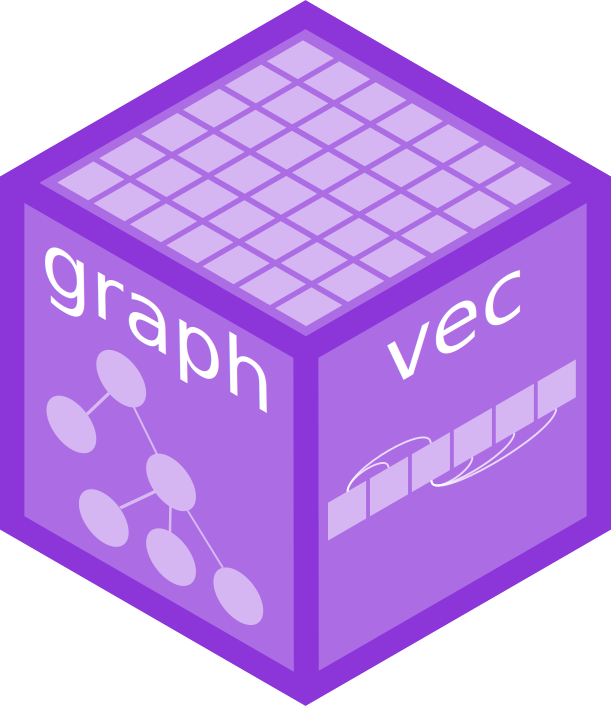

Package index
-
agg_vec() - Create an aggregation vector
-
edge_vec() - Graph vector along edges
-
graphvecgraphvec-package - graphvec: Vectorised graph data structures
-
is_aggregated() - Is the element an aggregation of smaller data
-
new_edge_vec() - Constructor function for edge_vec
-
new_node_vec() - Constructor function for node_vec
-
node_degree() - Identify the degree of a node in a graph
-
node_disjoint_id() - Identify disjoint graphs by node
-
node_distance() - Identify the distance from a node in a graph
-
node_is_child() - Identify the children of a node in a graph
-
node_vec() - Graph vector along nodes